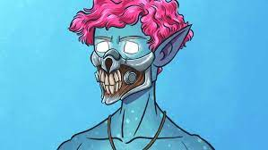

| praktikum2a |
NFT itu Apa bang?

Mengenal Apa Itu Lyfe Coin dan Harganya Saat Ini
Di sisi lain, tren NFT menimbulkan aksi masyarakat yang ikut-ikutan mencoba peruntungan di dunia NFT bahkan sampai menjual berbagai barang berupa foto di marketplace NFT mulai dari foto makanan, KTP, hingga foto koruptor.
“Di balik munculnya fenomena NFT yang viral beberapa minggu ini tentunya ada yang namanya peluang maupun ancaman,” kata Pemerhati Budaya dan Komunikasi Digital, Firman Kurniawan, dalam acara webinar, Kamis (20/1/2022).
Firman menjelaskan sebagai peluang, jika dilihat dari kelas aset investasi, ada tabungan, saham, danareksa, dan ada surat berharga, tetapi hari ini ada aset yang baru yaitu kripto dan NFT.
"Itu adalah sebuah peluang untuk menciptakan nilai ekonomi tertentu yang bisa ditransfer ke dunia nyata,” ujar Firman.
Menurut Firman, meskipun sebuah NFT tidak ada nilai di dunia nyata, tetapi hasil dari NFT tersebut dapat ditransfer ke dunia nyata. Hal itu bisa menjadi sebuah nilai.
"Contohnya NFT Ghozali, foto selfienya bernilai karena ada informasi yang terdapat di dalamnya, namun ketika dengan penghasilan yang di dapat Ghozali ditukarkan menjadi sebuah rumah, maka itu menjadi ada nilai di dunia nyata,” tutur Firman.
NFT juga bisa menjadi ancaman tertentu, karena nilai sebuah produk digital itu tergantung pada pertukaran informasi antara pihak yang ada di marketplace, jika ada sentimen negatif dari produk itu, maka nilainya bisa sangat jatuh.
“Contohnya fenomena squid game, NFT Squid game pernah trending dan harganya sangat tinggi, namun ketika ada sentimen negatif dari filmnya, dan terjadi cancel culture maka harganya bisa jatuh bahkan tidak berharga sama sekali,” ujarnya.
“Itu yang perlu diperhatikan masyarakat, jika berinvestasi jangan hanya dilihat dari up side saja melainkan juga down side nya,”
Firman berpendapat NFT adalah produk dalam bentuk text, gambar, suara, atau gabungan antara ketiganya yang kemudian dimasukkan ke ruang-ruang virtual.
“Sebuah NFT bisa memiliki nilai karena ada informasi yang terkandung di dalamnya. Selain itu ada relasi dan komunikasi antar para penggunanya yang menjadikan NFT itu bernilai dan bisa ditransaksikan” pungkas Firman.
2 dari 2 halaman
Mengenal Perbedaan NFT dan Crypto
Ilustrasi NFT (Foto: Unsplash by Pawel Czerwinski)
Perbesar
Ilustrasi NFT (Foto: Unsplash by Pawel Czerwinski)
Sebelumnya, Non-Fungible Token atau sering disingkat NFT menjadi tren yang berkembang dalam beberapa tahun terakhir. Di Indonesia sendiri, baru-baru ini NFT menjadi salah satu perbincangan hangat karena banyak publik figur dan pejabat yang masuk ke dunia ini.
Sama seperti NFT, cryptocurrency juga menjadi salah satu perbincangan di dunia dan menjadikannya salah satu aset investasi yang cukup populer. Meskipun NFT dan crypto sama-sama merupakan aset digital, lantas apa perbedaan antara keduanya?
Apa itu NFT
NFT adalah semacam token yang tidak dapat ditukarkan, biasanya ditemukan di dalam teknologi blockchain. NFT meski sudah ada sejak 2014, tetapi popularitasnya semakin meningkat pada 2020-2021. Setelah itu, semakin banyak orang yang tertarik dalam melakukan transaksi NFT di berbagai platform.
Dilansir dari CNN, NFT adalah bagian dari konten digital yang ditautkan ke blockchain, atau basis data digital yang juga menopang cryptocurrency seperti Bitcoin dan Ethereum.
NFT biasanya digunakan untuk membeli dan menjual karya seni digital dan dapat berbentuk GIF, tweet, kartu perdagangan virtual, gambar objek fisik, kulit video game, real estat virtual, dan banyak lagi.
Apa itu cryptocurrency?
Cryptocurrency atau mata uang kripto, sering disebut juga aset kripto. Crypto adalah sebuah mata uang digital atau aset digital yang tengah cukup populer dalam beberapa tahun terakhir.
Dilansir dari Investopedia, Kamis 20 Januari 2022, cryptocurrency atau crypto adalah mata uang digital atau virtual yang dijamin dengan kriptografi, yang membuatnya hampir tidak mungkin untuk dipalsukan atau dibelanjakan ganda.
Banyak cryptocurrency adalah jaringan terdesentralisasi berdasarkan teknologi blockchain atau buku besar terdistribusi yang ditegakkan oleh jaringan komputer yang berbeda.
Fitur yang menentukan dari cryptocurrency adalah bahwa mereka umumnya tidak dikeluarkan oleh otoritas pusat mana pun, menjadikannya secara teoritis kebal terhadap campur tangan atau manipulasi pemerintah.
Perbedaan NFT dan Crypto
Hal yang membedakan antara NFT dan cryptocurrency adalah aset kripto seperti Bitcoin dan Ethereum dapat dipertukarkan, artinya dapat diganti atau ditukar dengan aset lain yang identik dengan nilai yang sama, seperti uang dolar atau crypto lainnya.
Sedangkan NFT adalah sebuah aset yang unik dan tidak dapat saling dipertukarkan, atau dalam kata lain tidak ada dua NFT yang sama. NFT menciptakan kelangkaan di antara aset yang tersedia tanpa batas, bahkan ada sertifikat keaslian untuk membuktikannya
|
Ghozali Everyday
|